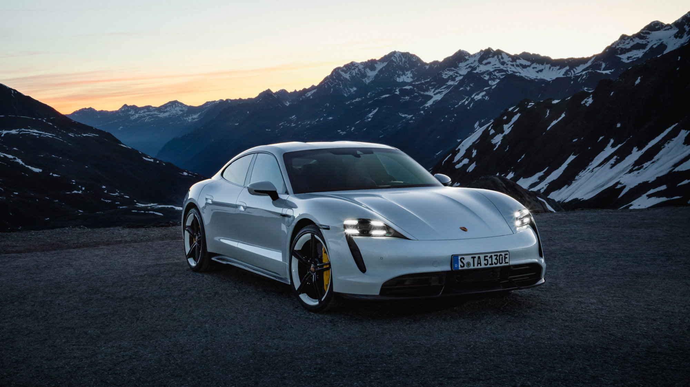

Porsche
Porsche Taycan
أول سيارة كهربائية بالكامل من بورشه، تجمع بين الأداء الرياضي والتكنولوجيا الحديثة مع تسارع مذهل.
أول سيارة كهربائية بالكامل من بورشه، تجمع بين الأداء الرياضي والتكنولوجيا الحديثة مع تسارع مذهل.

| المحرك | محركان كهربائيان |
| عدد المحركات | 2 |
| القوة | 952 حصان |
| عزم الدوران | 1110 نيوتن متر |
| ناقل الحركة | ثنائي السرعات |
| نظام الدفع | رباعي AWD |
| التسارع (0-100) | 2.4 ثانية |
| السرعة القصوى | 260 كم/س |
| عدد المقاعد | 4 |
| نوع الوقود | كهرباء |